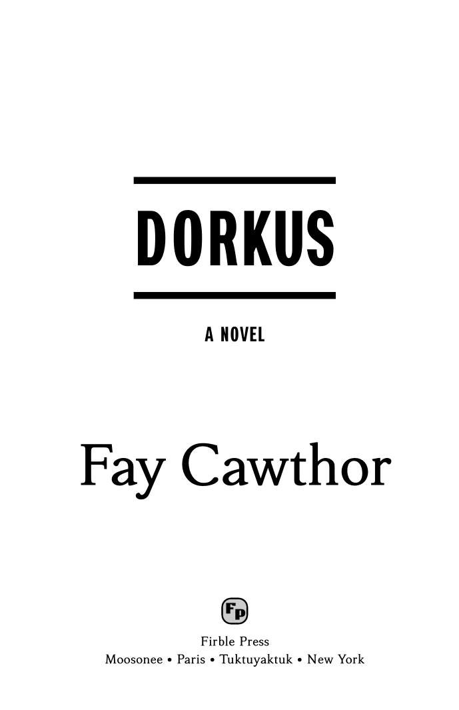

Novelette Documentation
 Home Tutorial Document Body Components
Home Tutorial Document Body Components
 Index
Index
Display Zone
Overview
Every component environment starts with a display zone. In some places, such as
the book title page, this zone occupies the entire component. In other places, especially
new chapters, you use \maintext to end the zone somewhere in the middle of the
component's first page.
Within a display zone, you may use a variety of decorative effects that are unavailable
elsewhere. Standard LaTeX commands, such as \large and \raggedright,
do not work in Novelette. Instead, you must use Novelette's own commands and options.
This provides a consistent interaction between the code and the fonts.
Remember that Novelette is for printed, popular fiction. If the Novelette styles cannot do what you want, then either use some other document class, or reduce what you want to what you need.
Images in Display Zones
You may place images in a display zone.
-
An image may not float. If you attempt to float, then a warning is issued, and the float is not obeyed.
-
An image may occupy a full page. This is useful for such things as maps, where the image is an entire single-page component.
Footnotes in Display Zones
You may write footnotes in most display zones.
-
You may not write footnotes anywhere in front matter or in back matter, whether or not within a display zone.
-
The text of the footnote will appear at the bottom of the page (not the bottom of the display zone).
-
No marker prints, and the marker count is not incremented. No label prints at the footnote text. This is standard book design.
-
Display zone footnotes are rare. Generally, they are only used when the note applies to an entire chapter, rather than to a particular sentence or paragraph. For example:
\style3{12} % Chapter number
\style4{Myron and Bertha} % Chapter title
\footnote{This chapter is based on \textit{Romeo and Juliet}.}
Block Environments
If you place a block environment in a display zone, you may use its option to choose normal or small text. Small text is especially useful for epigraphs.
Vertical Spacing
Display zones usually consist of styled text, vertically separated with a large amount of
white space. Use \blankline and \vspace commands for that purpose.
-
Important: Measure vertical space with units of
\baselineskiprather than units ofptor anything else. -
Good:
\vspace{2.3\baselineskip}. Bad:\vspace{10pt}.
\styleN[option]{text} where N = integer 0-9.
These commands are used for printing the book title, subtitle, and author; chapter titles and chapter subtitles; and similar purposes.
Each \styleN (for N = 0 to 9) applies the font, scale, track, align,
and case that were set by the corresponding \setstyleN
in preamble.
-
\styleNrequires N to be an integer 0-9. -
These commands may only be used within a display zone, but not within a block environment.
-
You may not nest styles within styles.
-
There is no particular meaning or hierarchy.
\style1may be more prominent, or less prominent, than\style2. -
The styled text must fit on one line, without wrap.
-
You may repeat the various
\styleNin any order, in any display zone. -
The only option is
[info]. This measures the width of the typeset text, and writes the width to Terminal (console). It is measured in normal, unscaled em. Example:Info: PDFpage 56 \style4 width 12.84em.
-
If the
\setstyleNisfont=main,case=nonethen the style text may use Italics. Write the\textit{text}command inside the\styleN.
Horizontal Lines
For decoration, you may print horizontal lines within display zones. This may be useful in special places such as the book title page. But it can be distracting, when used within the flow of your story.
Although standard LaTeX has a \line command, its purpose is irrelevant
in Novelette. So the command is re‑written with custom syntax:
\line{align=A,width=W,thick=T}
-
A -> left right center. Default center.
-
W -> must be measured in units of
em. Notpt.-
Recommended: W >= 4em.
-
If W is larger than the textwidth, it will be silently truncated to the textwidth. Thus W=100em is a quick way to produce a full‑width line.
-
To produce a line width that is related to the width of some
\styleNline of text, do this: Compile using[info]for that style. Then request a suitable line width (may be more, less, or the same value).
-
-
T -> number without units 0-9. May be decimal.
-
T=1 is the thinnest available line, 0.75pt. Print services prefer this minimum, for best appearance.
-
T=9 is 6.75pt.
-
T=0 reserves the space, but does not print a line.
-
0<T<1 is silently promoted to T=1.
-
T>9 is silently demoted to T=9.
-
Example: Book Title Page
Styles 1, 2, and 3 were chosen for appearance. Styles 6 and 7 are defaults. The width of the
typeset title was measured by [info] Then the widths of the
surrounding lines were set to that value. The \vfill is one way to insert vertical
space (it is standard LaTeX, not specific to Novelette).
\documentclass{novelette}
\setstyle1{font=dark,align=center,scale=6,track=0}
\setstyle2{font=dark,align=center,scale=1.6,track=2}
\setstyle3{font=main,align=center,scale=4.5,track=0}
\begin{document}
\frontmatter
% Other pages here.
\begin{component} % Starts with display zone.
\vfill
\line{align=center,thick=9,width=14.48em}
\style1[info]{DORKUS}
\line{align=center,thick=9,width=14.48em}
\blankline
\style2{A Novel}
\vfill
\style3{Fay Cawthor}
\vfill
\style6[logo]{\logo*{images/fp-logo.png}}
\style6{Firble Press}
\style7{Moosonee • Paris • Tuktuyaktuk • New York}
\end{component} % Did not use \mainmatter.
% Other pages here.
\end{document}
Result: Note that the left margin is slightly wider, because this is a recto page, with glue strip at left. This is shown at reduced size.

Example: New Chapter
\begin{component}
\vspace{3\baselineskip}
\style1{8} % chapter number
\vspace{.7\baselineskip}
\style4{Jack's Revenge} % chapter subtitle
\vspace{3\baselineskip}
\maintext % end of display zone
\init{J}\Smcp{ack was angry.} Someone had stepped on his blue suede shoes,
and a crime like that could not be forgiven. etc...
etc...
\end{component}
 TOP
TOP